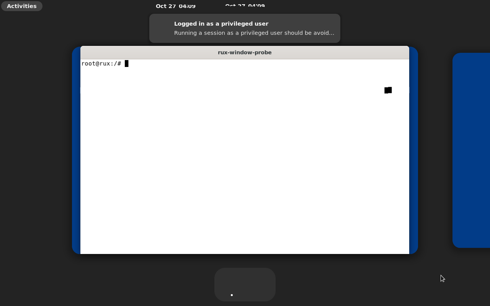
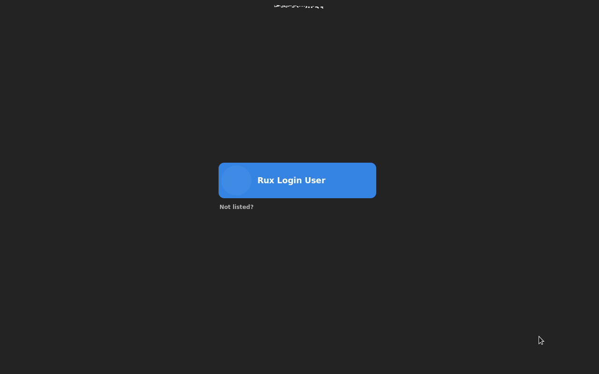
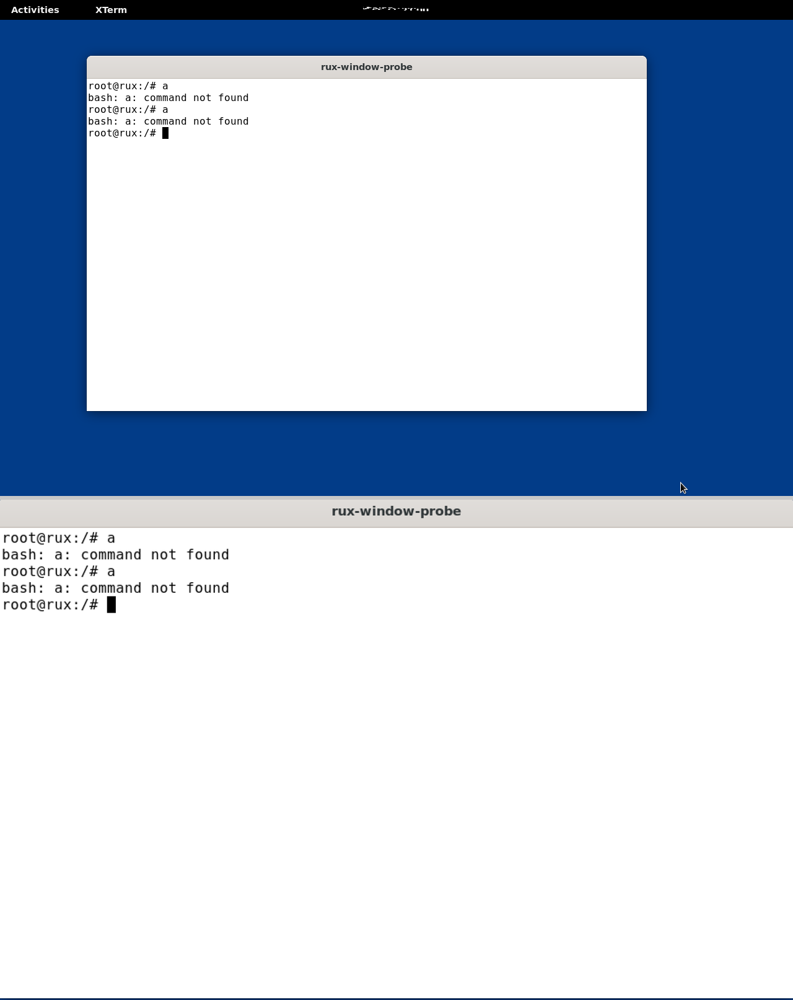

用 Rust 从零编写的
Linux ABI 兼容内核
Rux 的全部子系统——调度器、内存管理、ext4、binder、网络栈与验证框架——均由 AI 代理实现,人类负责目标设定、评审与合并。未修改的 Ubuntu 22.04 用户态可启动至 GNOME Shell 桌面,未修改的 OpenHarmony 可启动全部 135+ 服务,无需补丁、重编译或配置变更。
未修改发行版的实机启动验证
兼容性以未修改的发行版镜像与上游用户态程序直接验证,不依赖任何移植层适配。以下截图均来自 Rux 原生内核的帧缓冲/串口实拍。



一套内核,三种架构
x86_64 是第一优先级开发与测试平台(KVM 近原生加速,所有功能/性能/LTP 测试都在它上面跑);riscv64 与 aarch64 保持三架构构建与回归门禁。
| 架构 | QEMU 机型 | 加速 | 用户态 | 当前状态 |
|---|---|---|---|---|
| x86_64 | q35 | KVM(主平台) | Ubuntu 22.04 (glibc) | GNOME 桌面实机启动 · LTP/性能主战场 |
| riscv64 | virt | TCG(MTTCG) | Ubuntu 22.04 (glibc) / musl 最小根文件系统 | 桌面 + 内核套件 1267/1267 |
| aarch64 | virt (gic-version=3) | TCG | 交互 shell | shell / 信号 / 内核套件全绿 |
ABI 是契约,内部是净室设计
对外:系统调用号、语义、ELF/auxv、futex、procfs 布局,甚至 glibc 动态加载器读取的 uname 字符串,全部对齐 Linux。对内:不受历史包袱约束,用 Rust 写出更好的设计 —— 每一项内部分歧都登记在册并携带兼容性证据。
🛡️Rust 安全,有台账
全内核 Rust(no_std)。全史 34 个内存破坏类缺陷逐一归档:23 个位于被审计的 unsafe/汇编,11 个位于 safe 代码(全部是安全 Rust 尚不类型检查的所有权/锁协议类);统治 C 内核的指针表达式类(越界/野指针/格式串)在 safe 代码中为零。
🤖AI 并行工程化
多代理并行开发:每任务独立工作树、独立分支,主会话审阅合并。每日多轮合并,全量回归验证。
内核由哪些部分组成
每个子系统均有独立设计页,含机制、数据结构与实测数字。以下为要点摘要。
🧠内存管理
buddy 页分配器 + magazine 小对象分配、全局页缓存、每任务 VMA;munmap churn 竞态家族已全数关闭。
📡IPC 与 binder
兼容 OpenHarmony 的完整 binder 实现、unix socket、pipe、SysV IPC;跨进程死锁家族已修复并回归。
🔍可观测性
统一 trace-event 框架 + tracefs(对齐 Linux 语义),syscost 普查、kallsyms、任务转储、看门狗配套齐备。
关键量化结果
四个独立栏目:测试(LTP / 稳定性 / 压力)、性能(门禁 + 基准面板 + 战役史)、安全(分类学 + 形式验证 + 缺口登记册),每一条都带 rig 与日期。
🛡️稳定性与压力
内核套件三架构全绿、桌面会话 2100 秒门 ×3、census/heal 自愈 MISS=0;stress-fleet 常驻 11 台 QEMU 舰队(猴测/模糊/内存风暴)。
📊性能
三层门禁 + 六大看护域。与 Linux 同机同加速(QEMU+KVM)对照(perf-gap-hunt 七轮 campaign 权威表):lmbench 14 项中 9 项领先(缺页 2.26–2.45×、mmap 4.2×、管道 3.56×)、5 项落后(最大 1.82×);Geekbench 多核领先 4.3%、单核 quiet 最佳领先 5.1%。
🔐安全
bug 分类学全史 34 例逐条归档(23 unsafe/汇编 + 11 safe 所有权类),指针表达式类缺陷为零;157 个 Kani harness 证明核心 unsafe 代码。
①克隆仓库
git clone https://github.com/topkernel/Rux
cd Rux纯 Rust 工作区,无子模块、无外部依赖镜像。
②构建内核
make build # riscv64(默认)
make build PLATFORM=x86_64 # x86_64Kernel.toml 在构建期编译进 kernel/src/config.rs。
③启动体验
make run # musl 最小根文件系统 → shell
make ubuntu-run # Ubuntu 22.04 → GNOME 桌面串口(ttyS0)即主日志;GUI 镜像用 -snapshot 启动,不写入共享镜像本体。